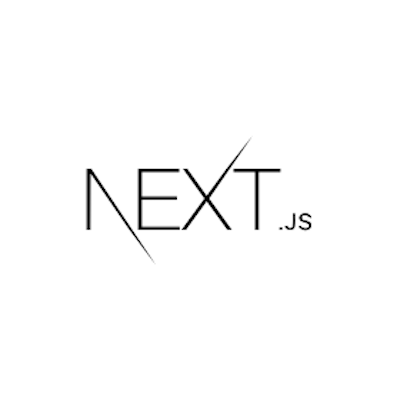
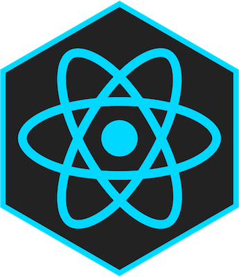
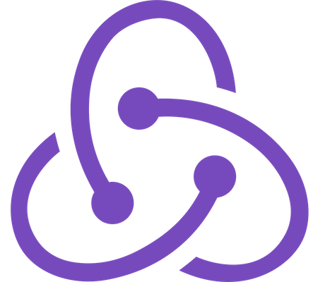
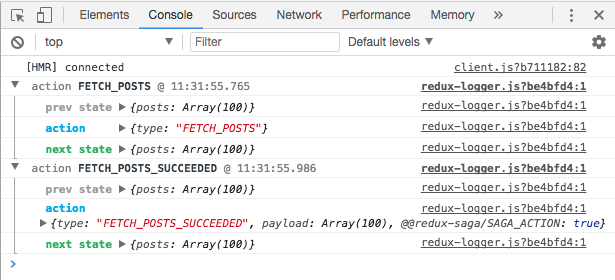
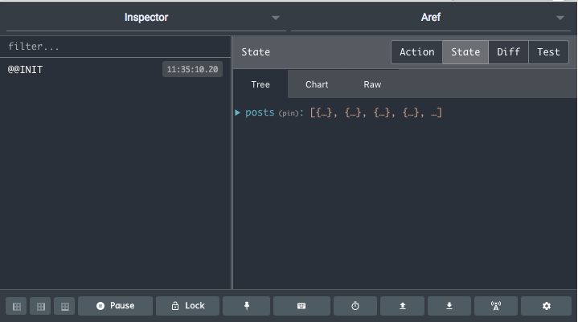

Next.js Boilerplate
بنیانی مینیمال برای ساخت اپلیکیشن های یونیورسال React، نیرو گرفته از Next.js
اجزای اصلی تشکیل دهنده

Next.js
فوندانسیون این پکیج روی Next.js بنا شده است. Next چهارچوبی برای تولید اپلیکیشن های Universal جاوااسکریپت است.
وبسایت Next.js

React
این بسته به صورت پیش فرض با React کانفیگ شده. اما با Inferno یا Preact نیز سازگار است.
وبسایت React

سایر اجزا
- Redux Saga: در این مجموعه جهت مدیریت side effect ها و عملیات های async از Redux Saga استفاده شده است.
-
Redux Logger: تمامی اکشن ها به همراه تغییراتی که در state ایجاد کرده اند مانند آنچه در عکس زیر می بینید در کنسول مرورگر لاگ می شوند.

Redux Logger فقط در محیط development فعال است. -
Redux Dev tools Extension: نمایش state اپلیکیشن در افزونه redux dev tools

این افزونه فقط در محیط development فعال است. - Axios: برای ارسال درخواست های HTTP از Axios استفاده شده است.